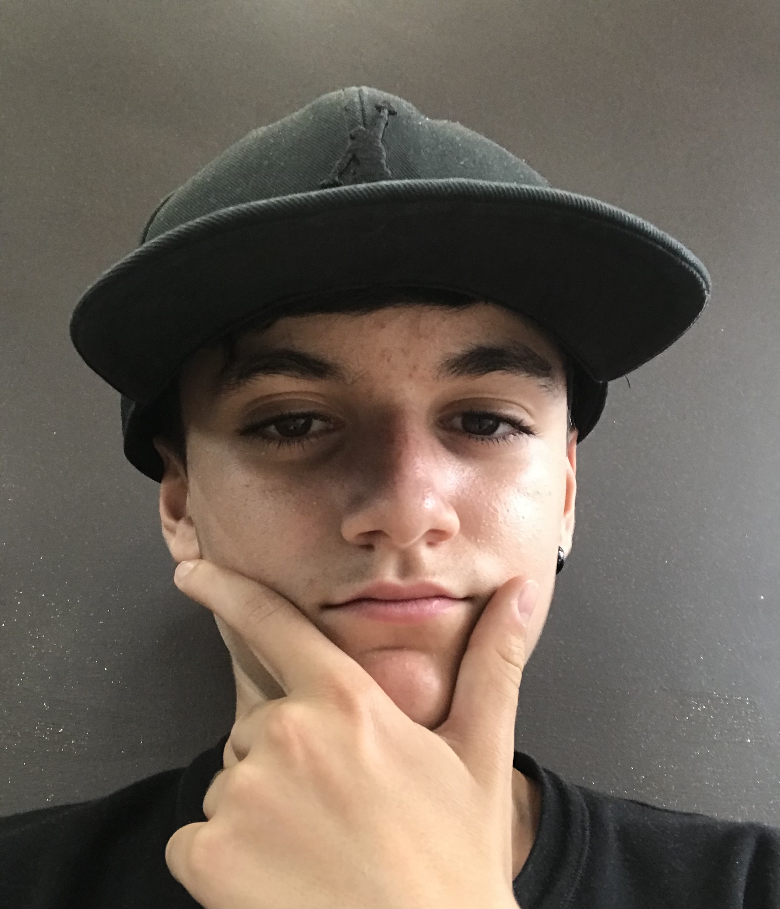

Foto fra
Daje:

Francesco Curcetti
Studente
sempre forza juve stabia
- Sono Francesco Curcetti e sono nato il 17/08/09 a Rimini
- Dovevo nascere ad ottobre, ma io e il mio gemmello, ci siamo stancati e
siamo nati prematuramente stando nelle incubatrici circa un mese.
- Io ho 15 anni e vado al Maxwell, un istituto tecnico di nichelino,
città in cui vivo.
- Sono un ragazzo sportivo e anche un po' pigro, perché se devo stare sul divano
allora è perché c'è la mia squadra del cuore e la Formula 1,
che mi ha trasmesso mio padre fin da piccolo.
- La cucina è un'altra mia passione, trasmessa da mia mamma e mia nonna
perché vedere masterchef con mia mamma e fare le polpette con mia
nonna da piccolo mi è piaciuto molto.
Futuro?
- sinceramente non ho le idee chiare sul mio futuro,
perché non un sogno preciso però devessere qualcosa che ripaghi i miei sforzi.
- Dopo il diploma spero di indirizzarmi sul lavoro e di non proseguire all' università